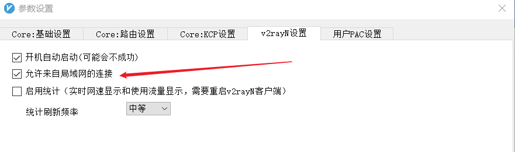
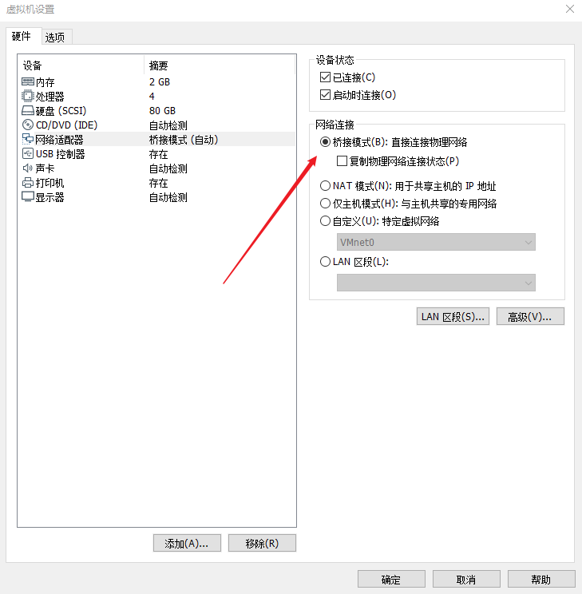
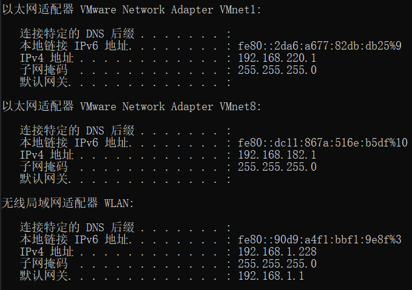
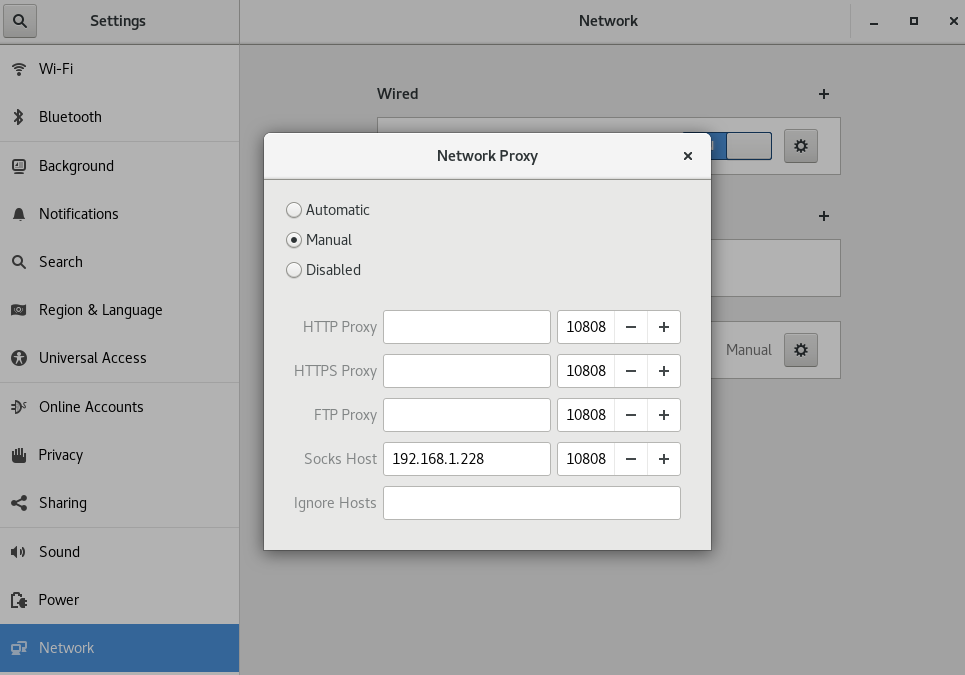

虚拟机使用宿主机的v2ray科学上网
v2ray设置
- 首先设置v2ray允许来自局域网的连接
- 主界面 → 参数设置 → v2rayN设置 → 勾选
“允许来自局域网的连接”

VMware设置
- 要将网络模式改为桥接模式
- 选中虚拟机右键 → 设置 → 网络适配器 → 勾选
“桥接模式（B）：直接连接物理网络”

Linux系统设置
查看宿主机的IP地址
- 在
cmd中输入ipconfig

- 可以看到有三个适配器，其中
VMnet1是主机模式的网卡，VMnet8是NAT模式的网卡，WLAN是宿主机WIFI的网卡 - 我们需要的是
WLAN的IP地址
设置系统代理
- 找到Settings → Network → Network Proxy
- 勾选
Manual - 在
Socks Host处填入WLAN的IP地址和v2ray监听的端口

设置终端代理
- 虽然设置了系统代理，但是终端是不会自动走Socks代理的
- 可以安装proxychains来走代理
proxychains的安装
安装git
1 | yum -y install git |
安装gcc
1 | yum -y install gcc |
下载proxychains
1 | git clone https://github.com/rofl0r/proxychains-ng |
编译和安装proxychains
1 | cd proxychains-ng |
设置代理
1 | vim /etc/proxychains.conf |
- 在
[ProxyList]下面加入代理
1 | [ProxyList] |
使用方法
- 在bash命令前加上
proxychains4 - 访问谷歌测试
1 | proxychains4 curl https://www.google.com |
- 还可以用proxychains启动一个bash，在这个bash中的所有请求都会走代理
1 | proxychains4 bash |